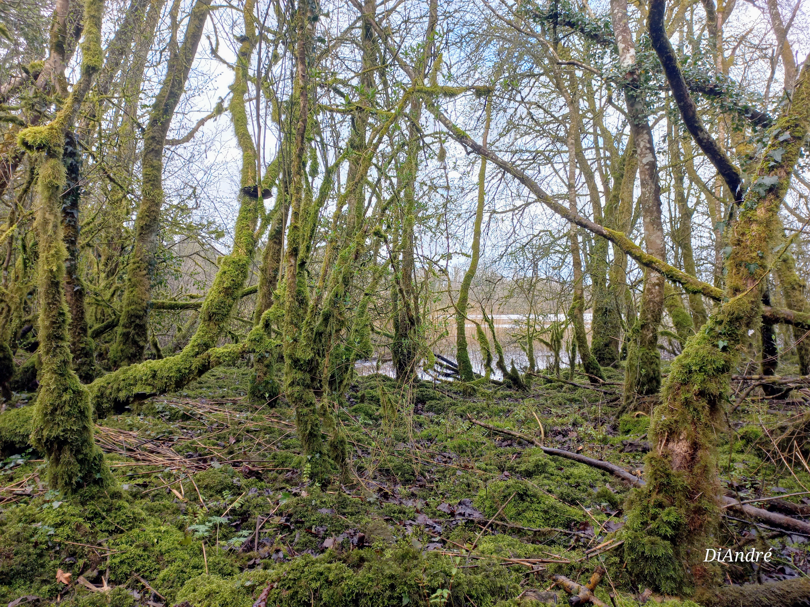

The River's Story
From headwaters to estuary, the Nanny and Delvin catchments connect landscapes,
communities, habitats and water. The Trust works across these systems to support
restoration, stewardship and better-informed local action.

Why This Trust Exists
The Trust exists to support practical restoration, strengthen stewardship, and turn
concern for river health into visible action. Healthy rivers support biodiversity,
local identity, landscape resilience, and long-term community benefit.
Catchment-scale thinking
Nature-based action
Community stewardship
Our 2028 Promise
By 2028, the Trust aims to support visible, defensible progress through river-corridor
care, wetland opportunities, habitat repair, estuary stewardship and citizen science,
with practical action grounded in evidence and local partnership.
See Practical Action Pathways